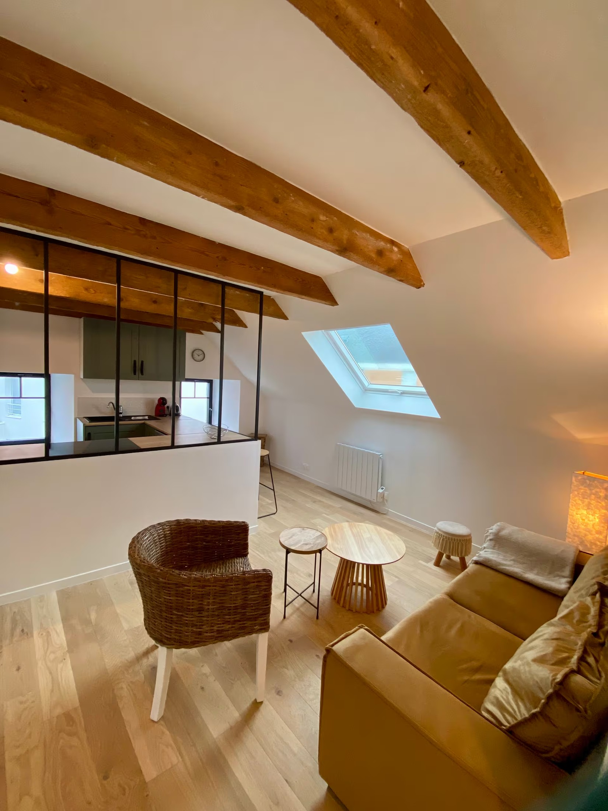
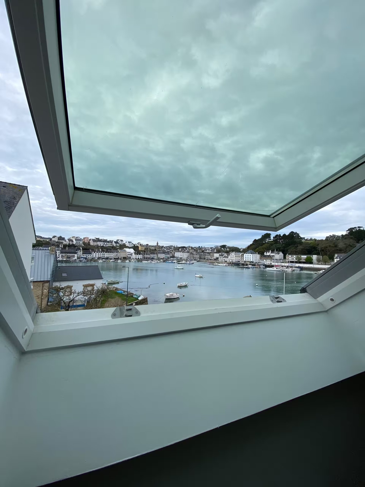
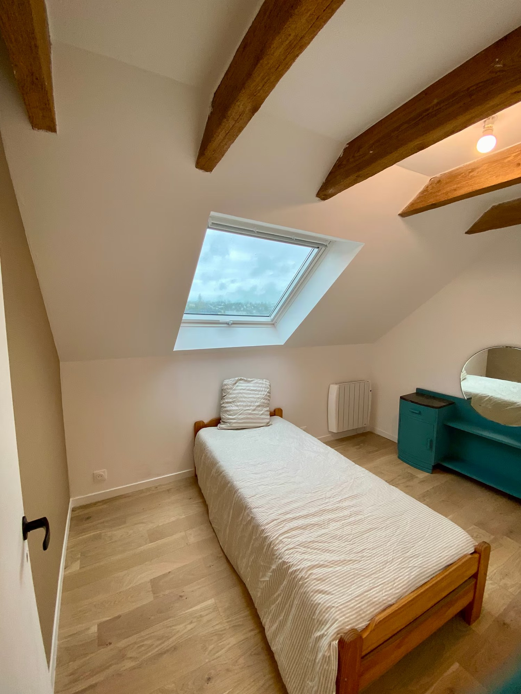
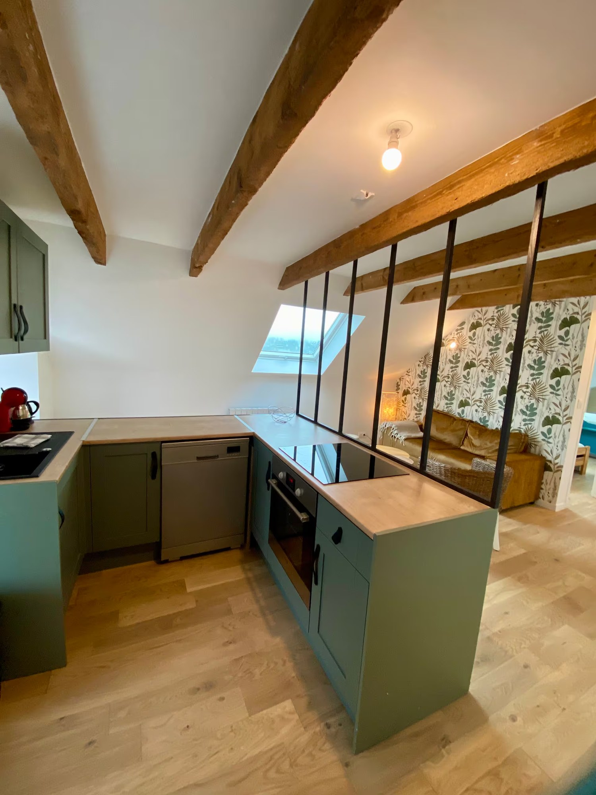
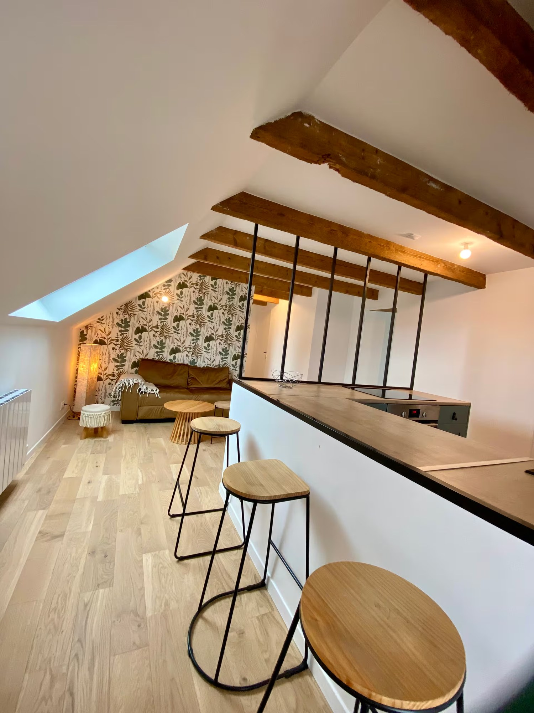
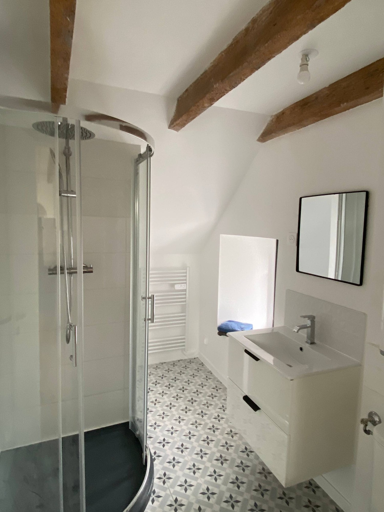
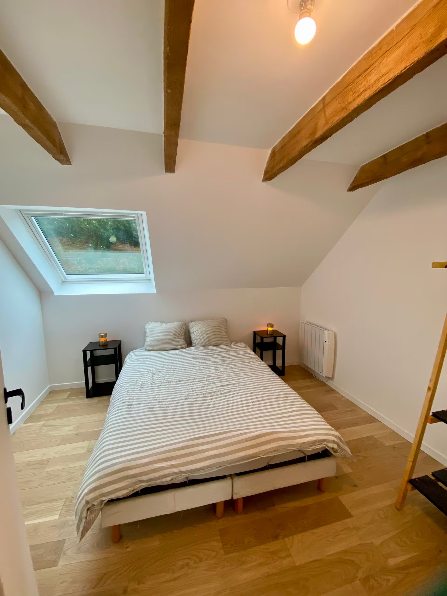

Le charme
Les poutres, les volumes sous pente et la lumière donnent une vraie personnalité au lieu.
cocon · poutres · charme
Un refuge sous les toits bretons, chaleureux et plein de charme, avec ses poutres appartentes, sa lumière et la mer toute proche.

l’esprit du lieu
Le charme de l’ancien : sous les poutres en chêne, dans la lumière qui entre par les fenêtres de toit, dans cette sensation de cabine perchée au-dessus de la mer on sent bien.
Depuis les fenêtres, on aperçois le port, le ciel et les changements de temps. Après une journée de plage, de marche ou de marché, l’appartement devient un vrai refuge : simple, calme, intime.
On profite de l’extérieur avec l’accès au jardin partagé face au Goyen.
ce qu’on aime
Les poutres, les volumes sous pente et la lumière donnent une vraie personnalité au lieu.
Cuisine équipée ouverte sur le séjour, avec four multifonctions, micro-onde, lave-vaisselle. TV, internet fibre, séjour lumineux.
Une chambres avec grand lit, une chambre avec lit simple, salle de bain avec douche.
Quand l’envie de sortir arrive, le jardin de la résidence permet de retrouver l’air marin face à l’estuaire.

au rythme du goyen
On imagine facilement quelques jours ici hors saison : une balade sur les sentiers, un café chaud au retour, un livre sous les poutres, puis le bruit du vent qui rappelle que la mer n’est jamais loin.
En été, c’est une base simple pour profiter des plages et des marchés. Le reste de l’année, c’est un petit abri plein de caractère pour découvrir une Bretagne plus calme.
photos & ambiances
Des images simples pour montrer le logement tel qu’il est, tout en laissant respirer l’atmosphère du bord de mer.






toute l’année
Ce logement se prête particulièrement aux escapades courtes, aux week-ends calmes, aux séjours en couple et aux moments où l’on cherche moins la performance que l’atmosphère.
voir aussi